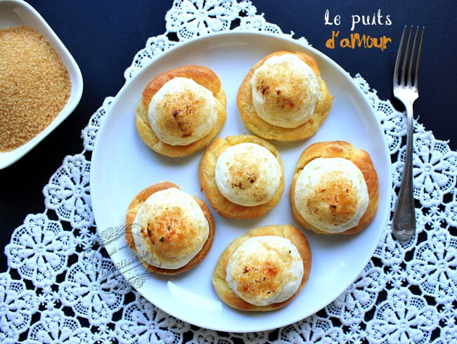

Puit d'amour

A propos
A l'origine, ce dessert n'était pas garni de crème pâtissière mais de confiture. On doit cette pâtisserie à Vincent La Chapelle, un grand pâtissier du XVIIIè siècle. Aujourd'hui, on peut préparer les puits d'amour avec de la pâte à choux et/ou de la pâte feuilletée, de la crème Chiboust ou de la crème pâtissière, c'est au choix.
En bref
Ingredient
Pour la pâte à choux :
90 ml d'eau
90 ml de lait
3 g de sel
6 g de sucre
75 g de beurre
110 g de farine
3 œufs
Pour la crème pâtissière :
20 cl de lait entier
1 gousse de vanille (la Cap d'Ambre est top !)
2 jaunes d’œufs
40 g de sucre en poudre
20 g de maïzena
1 cuillère à soupe rase de farine
1 feuille de gélatine
Pour la meringue italienne :
2 blancs d’œufs
25 g + 70 g de sucre
2 cuillères à soupe d'eau
Cassonade
Préparation
Commencez faire infuser la vanille de la crème pâtissière. Plus elle sera infusée, meilleure elle sera ! Donc ouvrez la gousse en deux et grattez les graines avec la lame d'un couteau. Placez les graines et la gousse ouverte dans une casserole avec le lait. Faites chauffer puis éteignez le feu et laissez infuser (1 heure minimum si vous pouvez).
Pour la pâte à choux, placez l'eau, le lait, le sel, le sucre et le beurre dans une casserole. Faites chauffer jusqu'à ce que tout soit parfaitement fondu. Ajoutez alors la farine en une fois et mélanger sans arrêter avec une cuillère en bois. La pâte doit devenir sèche et doit accrocher au fond de la casserole en laissant une fine pellicule.
Transvasez la pâte dans un saladier et ajoutez les œufs un à un en mélangeant bien après chaque ajout. La pâte va former des espèces de gros grumeaux, c'est normal ! Ils vont disparaitre au fur et à mesure.
Préchauffez le four à 200°C.
Placez la pâte à choux dans une poche à douille munie d'une douille lisse. Pochez des choux de pâte sur une plaque recouverte de papier sulfurisé. Aplatissez les points avec un doigt mouillé.
Enfournez pour 10 minutes. D'habitude, on n'ouvre pas la porte du four avant 20 minutes quand on fait de la pâte à choux car cela fait retomber la pâte. Mais ici c'est justement ce que l'on veut !
A la sortie du four, aplatissez les choux et donnez-leur la forme de petites vasques qui rappellent la forme d'un puits.
On reprend maintenant la crème pâtissière. Placez la gélatine dans un bol d'eau froide.
Fouettez les jaunes d’œufs avec le sucre. Ajoutez la farine et la fécule de maïs tamisées et fouettez de nouveau. Ôtez la gousse de vanille du lait et ajoutez le lait petit à petit dans la préparation.
Replacez le tout dans la casserole et faites cuire à feu doux jusqu'à épaississement. Il faut 5 minutes environ.
Versez la crème dans un saladier et ajoutez la gélatine. Filmez au contact.
Pour la meringue italienne, placez 70 g de sucre dans une casserole avec 2 cuillères à soupe d'eau. Faites chauffer jusqu'à ce que le sucre fonde et atteigne 118°C.
Parallèlement, fouettez les blancs en neige en ajoutant progressivement les 25 g de sucre. Quand le mélange commence à mousser, ajoutez le sucre cuit et continuez de fouettez jusqu'à ce que la température redescende à 50°C.
Incorporez alors la meringue italienne à la crème pâtissière : vous avez votre crème Chiboust !
Placez la crème dans une poche à douille munie d'une douille lisse. Ce n'est pas obligatoire, vous pouvez le faire avec une cuillère mais ce sera moins joli. Répartissez la crème sur les petits puits de pâte à choux.
Saupoudrez de cassonade et passez au chalumeau pour terminer. Vous pouvez aussi passer les puits d'amour sous le gril du four, mais vérifiez bien la coloration ! Personnellement, depuis que j'en ai un qui marche bien, j'adore me servir du chalumeau :)
C'est prêt !